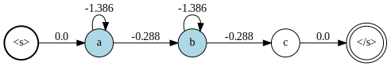

Finite State Machines
The MarkovModels package represents Markov chains as probabilistic Finite State Machine (FSMs). Here is an example of FSM as used by the package:

The double edge circle node with the label "<s>" (respectively "</s>") is the initial (respectively final) state of the FSM. States with light blue background color are emitting states, that is, they are associated with a probability density function index (pdfindex). If they have no label, this index is use when displaying the node - as in the example above. White circle node with a label written inside are non-emitting labeled states. The states represented as point are neither emitting nor have a label. Finally, the number on the links are the log-probabilities to move from one state to another.
In the following, we present the tools provided by the MarkovModels package manipulate such FSM. All the examples below assume that you have already imported the MarkovModels package by doing using MarkovModels.
Creating FSMs
The first step is to create an FSM object.
fsm = FSM()
When created, the FSM has only two states: the initial state and the final state. In the MarkovModels, FSMs cannot have multiple initial for final states.
You can add states to the FSM by using the function addstate!:
s1 = addstate!(fsm, pdfindex = 1)
s2 = addstate!(fsm, pdfindex = 2, label = "a")
s3 = addstate!(fsm, label = "b")
s4 = addstate!(fsm)
Note that a state can be:
- emitting and labeled
- emitting only
- labeled only
- non-emitting and non-labeled (nil state)
The initial and final states are specific nil states.
The link! allows to add weighted arcs between states:
link!(fsm, initstate(fsm), s1)
link!(fsm, s1, s1, log(1/2))
link!(fsm, s1, s2, log(1/2))
link!(fsm, s2, s3)
link!(fsm, s3, s4)
link!(fsm, s4, finalstate(fsm))
Finally, we provide a special constructor for convenience:
MarkovModels.LinearFSM — MethodLinearFSM(seq[, emissionsmap::Dict{<:Label, <:Pdfindex}])Create a linear FSM from a sequence of labels seq. If emissionsmap is provided, every item l of seq with a matching entry in emissionsmap will be assigned the pdf index emissionsmap[l].
FSM operations
MarkovModels.addselfloop! — Methodaddselfloop!(fsm[, looplogprob = log(1/2)])Add a self-loop to all emitting states of fsm. looplogprob is the log-probability of self-transition.
Examples
julia> fsm = LinearFSM(["a", "b", "c"], Dict("a" => 1, "b" => 2))
julia> addselfloop!(fsm, log(1/4))Input:

Output:

julia> fsm = LinearFSM(["a", "b", "c"], Dict("a" => 1, "b" => 2))
julia> fsm |> addselfloop!Input:
Output:

MarkovModels.compose! — Methodcompose!(fsm, subfsms)Replace each state s in fsm by a "subfsms" from subfsms with associated label s.label. subfsms should be a Dict{<:Label, FSM}`.
Examples
julia> fsm = union(LinearFSM(["a", "b"]), LinearFSM(["c"])) |> weightnormalize!
julia> subfsms = subfsms = Dict(
"a" => LinearFSM(["a1", "a2", "a3"], Dict("a1"=>1, "a2"=>2, "a3"=>3)) |> addselfloop!,
"b" => LinearFSM(["b1", "b2"], Dict("b1"=>4, "b2"=>5)) |> addselfloop!,
"c" => LinearFSM(["c1", "c2"], Dict("c1"=>6, "c2"=>1)) |> addselfloop!
)
julia> compose!(fsm, sufsms)Input :
fsm

subfsms["a"]

subfsms["b"]

subfsms["c"]
 Output:
Output: 
Alternatively, FSMs can be composed with the ∘ operator:
julia> fsm ∘ sufsmsWhen using the ∘ operator, the composition is not performed in place.
MarkovModels.concat — Methodconcat(fsm1, fsm2, ...)Concatenate several FSMs into single FSM.
Examples
julia> fsm1 = LinearFSM(["a", "b"])
julia> fsm2 = LinearFSM(["c", "d"])
julia> fsm3 = LinearFSM(["e"])
julia> concat(fsm1, fsm2, fsm3)Input:
fsm1

fsm2

fsm3

Output: 
MarkovModels.minimize! — Methodminimize!(fsm)Merge equivalent states such to reduce the size of the FSM. Only the states that have the same pdfindex and the same label can be potentially merged.
The input FSM should not contain cycles otherwise the algorithm will never end.
Examples
julia> fsm = union(LinearFSM(["a", "b", "c"], Dict("a"=>1)), LinearFSM(["a", "d", "c"], Dict("a"=>1)))
julia> fsm |> minimize!Input:

Output:

MarkovModels.removenilstates! — Methodremovenilstates!(fsm)Remove all states that are non-emitting and have no labels (except the the initial and final states)
Examples
julia> fsm = LinearFSM(["a", "b"], Dict("a" => 1))
julia> nil = addstate!(fsm)
julia> link!(fsm, initstate(fsm), nil)
julia> link!(fsm, nil, finalstate(fsm))
julia> fsm = fsm |> weightnormalize!
julia> fsm |> removenilstates!Input:

Ouput:

Base.union — Methodunion(fsm1, fsm2, ...)Merge several FSMs into a single one.
Examples
julia> fsm1 = LinearFSM(["a", "b", "c"], Dict("a"=>1))
julia> fsm2 = LinearFSM(["a", "d", "c"], Dict("a"=>1))
julia> union(fsm1, fsm2)Input:
fsm1
fsm2
Output:

MarkovModels.weightnormalize! — Methodweightnormalize!(fsm)Change the weight of the links such that the sum of the exponentiated weights of the outgoing links from one state will sum up to one.
Examples
julia> fsm = union(LinearFSM(["a", "b"]), LinearFSM(["c", "d"]))
julia> for s in states(fsm)
if ! isinit(s) && ! isfinal(s)
link!(fsm, s, s)
end
end
julia> fsm |> weightnormalize!Input:

Output:

This function has the side effect to "determinize" the FSM, that is, the resulting FSM will have at most one arc between each pair of node.